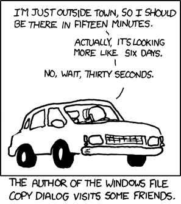

File copy progress for any running process
Problem
Suppose you have a file copy in progress (or some other long time -taking file operation). It doesn’t have a progress bar, and you’re left wondering how long it’s progressed, and you can’t gauge it by comparing source and target file sizes for some reason.

(Credit: xkcd)
Solution
Turns out, Linux makes this task pretty easy, all you got to do is inspect is the file handle’s position.
Let’s simulate reading my entire SSD content:
$ sudo cat /dev/nvme0n1 > /dev/null
In my case cat process’s PID is 350448.
I found it by running $ ps aux | grep /dev/nvme0n1, be sure to ignore the sudo one since it’s not
the one doing the reading!
We can read the process’ open file handles from /proc/<pid>/fd:
$ ls -al /proc/350448/fd
lrwx------ 1 root root 64 Jan 1 20:44 0 -> /dev/pts/1
l-wx------ 1 root root 64 Jan 1 20:44 1 -> /dev/null
lrwx------ 1 root root 64 Jan 1 20:44 2 -> /dev/pts/1
lr-x------ 1 root root 64 Jan 1 20:44 3 -> /dev/nvme0n1
The numbered files are file descriptors. We are interested in file descriptor info for file descriptor #3
at /proc/<pid>/fdinfo/<fdnum> (it is the one with /dev/nvme0n1 open):
$ cat /proc/350448/fdinfo/3
pos: 39948648448
flags: 0100000
mnt_id: 27
The position indicates it’s read 37.2 GB.
Caveats
Buffering
Please note that this is approximate, because if you’re copying a file, you don’t know how large read buffer it has. I.e. it has read that much, but depending on buffering the operation might not have yet written/processed/etc all that data.
Doesn’t work for special files
Please note that this position trick doesn’t work for special files like /dev/zero or /dev/urandom,
their position curiously seems to be 0 even after you’ve read much data.

Thanks for reading! 😍
If you like my writing, consider following me on Twitter.
Stay updated on my blog posts & projects - sign up for
my newsletter. 🚀
No spam, unsubscribe any time.
RSS also available.